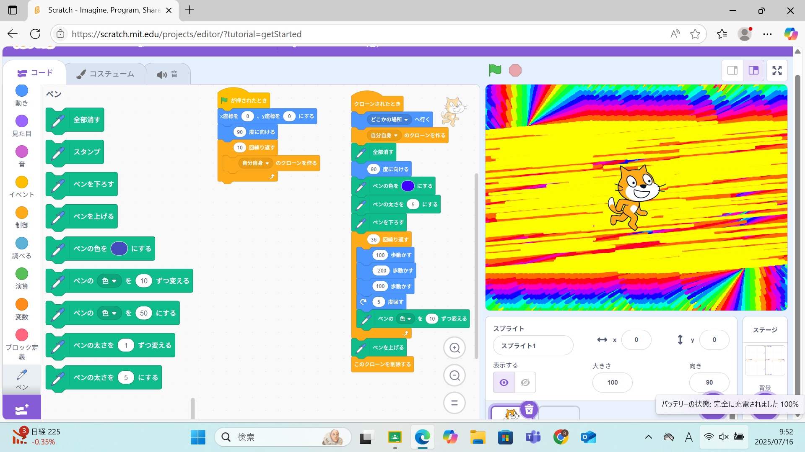
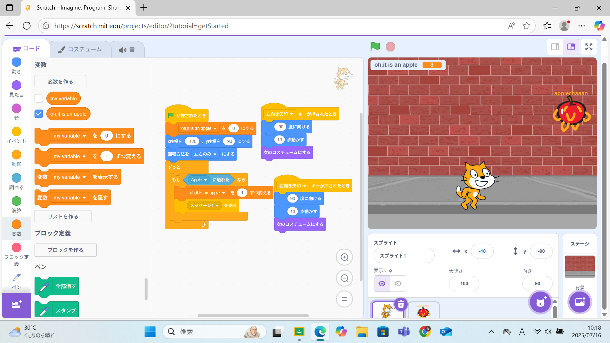

1週目のレポート ： 公大高専１年実習I-1
1a班1番 ちゃんみな
第1週目
1-1 サイエンスアート

1.内容
スクラッチを使用して、キャラクターの移動した後に線を引くプログラムをもとに、
プログラミングによってキャラクターを自由に動かし、自分だけのアートを作成した。
2.感想
今回はクローンを作成してランダムな位置に移動させ、アートを作るようにプログラムしたが、
例とは全く違うアートを作ることができ、少しのプログラムの違いでキャラクターの動きに大きな
違いを出すことができると知った。
1-2 ゲーム

1.内容
キャラクターの向きを左右だけに限定し、落ちてくるリンゴを拾うゲームを作成した。
落ちてくるものの落下を開始する座標と落下時間をランダムにするなどの工夫が必要だった。
2.感想
キャラクターの動きをリアルにするために、1つのキャラクターに2つのモデルを作ることや、
落ちてくるものがキャラクターに触れる数という変数を作ることなど、単純なゲームを作成するためにも
多くのアイデアが必要だと知った。
1-3 ホームページ作成
私のホームページ
1.内容
HTMLを使用して、ホームページを作成したり、レポートを書いたりした。
改行を意味する文字列やテキストの入力を意味する文字列などがあり、それらを活用して
文章を書いた。 2.感想
HTMLの使用方法を理解でき、普段の生活で見るようなウェブサイトを作成してみたいと思った。
各ページへのリンク
1週目のレポート
2週目のレポート
3週目のレポート
私のホームページ